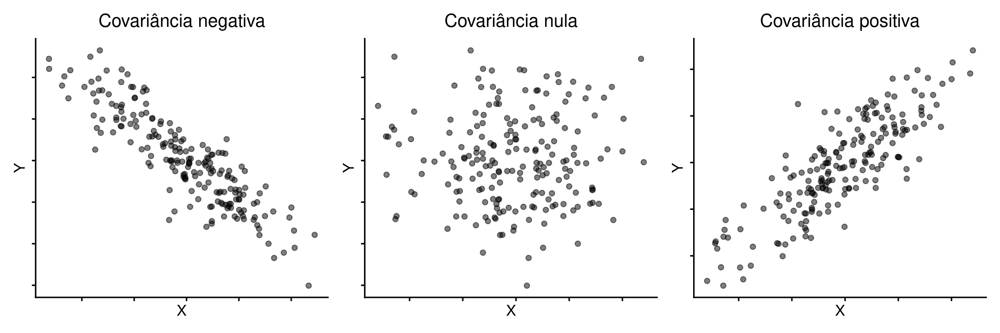
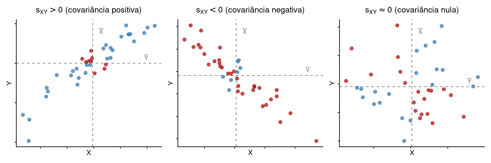
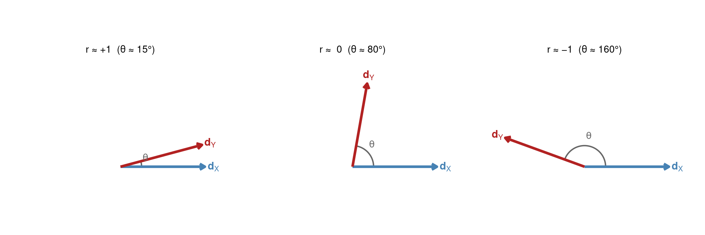

Covariância e Correlação Linear
Estatística
Covariância
Correlação
Álgebra linear
Formulação vetorial
Construção da covariância a partir da variância, derivação da correlação de Pearson, interpretação geométrica como cosseno do ângulo entre vetores e formulação matricial.
Nos capítulos anteriores, construímos a média e a variância como medidas que descrevem uma única variável. O passo natural é perguntar: como duas variáveis variam em conjunto? Para responder, precisamos de medidas que capturem a associação linear entre \(X\) e \(Y\): a covariância e o coeficiente de correlação de Pearson.
1 Motivação: associação entre duas variáveis
Observamos que a associação pode ser positiva (quando \(X\) aumenta, \(Y\) também aumenta), negativa (quando \(X\) aumenta, \(Y\) diminui) ou nula (sem padrão linear aparente). Buscamos uma medida que quantifique a direção e intensidade desse padrão.
2 Da variância à covariância
2.1 O exemplo
A covariância nasce da mesma ideia da variância, mas agora olhando duas variáveis ao mesmo tempo. Considere o exemplo abaixo:
\[\mathbf{x} = \begin{bmatrix} 1 \\ 3 \\ 5 \end{bmatrix}, \qquad \mathbf{y} = \begin{bmatrix} 2 \\ 4 \\ 6 \end{bmatrix}\]
As médias são \(\bar{X} = 3\) e \(\bar{Y} = 4\). Depois de centralizar, obtemos:
\[\mathbf{d}_X = \begin{bmatrix} -2 \\ 0 \\ 2 \end{bmatrix}, \qquad \mathbf{d}_Y = \begin{bmatrix} -2 \\ 0 \\ 2 \end{bmatrix}\]
Agora, em vez de elevar ao quadrado cada desvio separadamente, multiplicamos os desvios correspondentes:
\[(-2)(-2) = 4, \qquad 0 \cdot 0 = 0, \qquad 2 \cdot 2 = 4\]
Somando,
\[4 + 0 + 4 = 8\]
O resultado é positivo porque, nas três observações, as duas variáveis caminham juntas: quando uma está abaixo da média, a outra também está; quando uma está acima, a outra também está.
Se trocarmos \(\mathbf{y}\) por
\[\mathbf{y} = \begin{bmatrix} 6 \\ 4 \\ 2 \end{bmatrix}, \qquad \mathbf{d}_Y = \begin{bmatrix} 2 \\ 0 \\ -2 \end{bmatrix}\]
então os produtos ficam
\[(-2)(2) = -4, \qquad 0 \cdot 0 = 0, \qquad 2(-2) = -4\]
Logo,
\[-4 + 0 - 4 = -8\]
Agora o resultado é negativo: quando uma variável está acima da média, a outra tende a estar abaixo.
3 Covariância amostral
A covariância ela mede o alinhamento entre as variações centradas de duas variáveis, isto é, variações de \(Y\) e \(X\) em torno de suas médias. Quando os desvios crescem juntos, a covariância tende a ser positiva e quando apontam em direções opostas, tende a ser negativa.
Podemos definir a covariância a partir da soma dos produtos cruzados entre \(Y\) e \(X\) por:
\[SQ_{XY} = \sum_{i=1}^n (X_i - \bar{X})(Y_i - \bar{Y})\]
\(SQ_{XY}\) desempenha, para duas variáveis, o mesmo papel que \(SQ\) desempenha para uma variável só.
A covariância amostral é a soma dos produtos cruzados dividida por \(n-1\):
\[s_{XY} = \frac{SQ_{XY}}{n-1} = \frac{\sum_{i=1}^n (X_i - \bar{X})(Y_i - \bar{Y})}{n-1}\]
A divisão por \(n-1\) aparece pelo mesmo motivo já visto na variância: depois de centrar os dados, uma restrição linear é introduzida em cada vetor de desvios.
Podemos ler o sinal de \(s_{XY}\) da seguinte forma:
- \(s_{XY} > 0\): as duas variáveis tendem a variar na mesma direção;
- \(s_{XY} < 0\): as duas variáveis tendem a variar em direções opostas;
- \(s_{XY} \approx 0\): não há alinhamento linear claro entre as variações.
Quando \(X = Y\), a covariância vira a própria variância. Portanto, a variância é um caso particular da covariância.
3.1 Exemplo
Para \(X = \{1,\ 3,\ 4,\ 6,\ 7,\ 9\}\) e \(Y = \{2,\ 4,\ 3,\ 7,\ 6,\ 8\}\):
| \(i\) | \(X_i\) | \(Y_i\) | \(d_{X_i}\) | \(d_{Y_i}\) | \(d_{X_i} \cdot d_{Y_i}\) |
|---|---|---|---|---|---|
| 1 | 1 | 2 | -4 | -3 | 12 |
| 2 | 3 | 4 | -2 | -1 | 2 |
| 3 | 4 | 3 | -1 | -2 | 2 |
| 4 | 6 | 7 | 1 | 2 | 2 |
| 5 | 7 | 6 | 2 | 1 | 2 |
| 6 | 9 | 8 | 4 | 3 | 12 |
\[SQ_{XY} = 32, \qquad s_{XY} = \frac{32}{5} = 6.4\]
3.2 Sinal da covariância: análise por quadrantes
No gráfico de dispersão, as retas \(X = \bar{X}\) e \(Y = \bar{Y}\) dividem o plano em quatro regiões. O sinal de cada produto \((X_i - \bar{X})(Y_i - \bar{Y})\) depende de onde o ponto está:
| Quadrante | \(X_i - \bar{X}\) | \(Y_i - \bar{Y}\) | Produto |
|---|---|---|---|
| I (superior direito) | \(+\) | \(+\) | \(+\) |
| II (superior esquerdo) | \(-\) | \(+\) | \(-\) |
| III (inferior esquerdo) | \(-\) | \(-\) | \(+\) |
| IV (inferior direito) | \(+\) | \(-\) | \(-\) |

Quando os pontos se concentram nos quadrantes I e III, os produtos cruzados tendem a ser positivos. Quando se concentram nos quadrantes II e IV, tendem a ser negativos. Quando aparecem distribuídos sem padrão linear claro, os sinais positivos e negativos tendem a se compensar.
4 Normalização: o coeficiente de correlação de Pearson
A covariância já informa direção e alinhamento, mas ainda depende da escala. Se multiplicarmos todos os desvios de uma variável por 10, a covariância também fica 10 vezes maior, mesmo que a direção conjunta das variações não tenha mudado.
Para comparar apenas a direção das variações, independentemente do tamanho dos vetores, padronizamos cada vetor de desvios pelo seu próprio comprimento. Isso leva ao coeficiente de correlação de Pearson:
\[r = \frac{s_{XY}}{s_X s_Y}\]
Como \(s_X\) e \(s_Y\) medem o tamanho típico das variações de cada variável, a divisão por \(s_X s_Y\) transforma a covariância em uma medida adimensional.
Em forma expandida,
\[r = \frac{\sum_{i=1}^n (X_i - \bar{X})(Y_i - \bar{Y})}{\sqrt{\sum_{i=1}^n (X_i - \bar{X})^2 \cdot \sum_{i=1}^n (Y_i - \bar{Y})^2}}\]
Assim, a correlação compara duas coisas ao mesmo tempo:
- se os desvios apontam para a mesma direção ou para direções opostas;
- quão forte é esse alinhamento depois de descontar a escala de cada variável.
Coeficiente de correlação de Pearson
\[r = \frac{s_{XY}}{s_X s_Y}\]
- \(r \approx 1\): as variações apontam quase para a mesma direção;
- \(r \approx 0\): o alinhamento linear é fraco ou inexistente;
- \(r \approx -1\): as variações apontam em direções opostas.
No exemplo do texto: \(r = 0.9331\).
5 Interpretação geométrica: o cosseno do ângulo entre vetores
Depois da padronização, a correlação pode ser lida geometricamente. Pense nos vetores centrados \(\mathbf{d}_X\) e \(\mathbf{d}_Y\). Se dividirmos cada um pelo seu comprimento, obtemos dois vetores unitários, isto é, dois vetores de comprimento 1 que preservam apenas a direção:
\[\mathbf{u}_X = \frac{\mathbf{d}_X}{\|\mathbf{d}_X\|}, \qquad \mathbf{u}_Y = \frac{\mathbf{d}_Y}{\|\mathbf{d}_Y\|}\]
Esses vetores padronizados permitem comparar direções diretamente.
- Se \(\mathbf{u}_X\) e \(\mathbf{u}_Y\) apontam quase para o mesmo lado, a correlação fica perto de \(1\).
- Se ficam quase perpendiculares, a correlação fica perto de \(0\).
- Se apontam para lados opostos, a correlação fica perto de \(-1\).
Em linguagem geométrica, a correlação é o cosseno do ângulo \(\theta\) entre os vetores centrados:
\[r = \frac{\mathbf{d}_X^\top\mathbf{d}_Y}{\|\mathbf{d}_X\|\,\|\mathbf{d}_Y\|} = \cos\theta\]
Essa fórmula não deve ser lida como um truque algébrico, mas como a tradução exata da ideia de alinhamento: a correlação mede quão parecidas são as direções das variações de \(X\) e \(Y\).
No exemplo do texto, o ângulo entre \(\mathbf{d}_X\) e \(\mathbf{d}_Y\) é \(\theta = \arccos(0.9331) \approx 21.1°\).

6 Formulação vetorial
Reunindo os resultados anteriores, a covariância e a correlação podem ser escritas em termos dos vetores centrados:
\[\mathbf{d}_X = \mathbf{M}\mathbf{x}, \qquad \mathbf{d}_Y = \mathbf{M}\mathbf{y}\]
A covariância é
\[s_{XY} = \frac{\mathbf{d}_X^\top \mathbf{d}_Y}{n-1} = \frac{\mathbf{x}^\top\mathbf{M}\mathbf{y}}{n-1}\]
Essa expressão mostra que a covariância é um produto escalar entre vetores centrados, dividido por \(n-1\).
Já a correlação é
\[r = \frac{\mathbf{d}_X^\top\mathbf{d}_Y}{\|\mathbf{d}_X\|\,\|\mathbf{d}_Y\|} = \cos\theta\]
isto é, a versão padronizada desse produto escalar, usada para comparar direções e não tamanhos.
7 Formulação matricial
Quando organizamos \(p\) variáveis nas colunas de uma matriz \(\mathbf{X}\), a matriz de dados centrados é
\[\tilde{\mathbf{X}} = \mathbf{M}\mathbf{X}\]
A partir dela, a matriz de covariâncias resume os alinhamentos par a par entre as variáveis:
\[\mathbf{S} = \frac{1}{n-1}\,\tilde{\mathbf{X}}^\top\tilde{\mathbf{X}} = \frac{1}{n-1}\,\mathbf{X}^\top\mathbf{M}\mathbf{X}\]
O elemento \((j,k)\) de \(\mathbf{S}\) é a covariância entre as variáveis \(j\) e \(k\), enquanto a diagonal guarda as variâncias.
Se quisermos comparar direções após retirar o efeito da escala, usamos a matriz de correlações. Seja \(\mathbf{D}_s = \operatorname{diag}(s_1, s_2, \ldots, s_p)\) a matriz diagonal dos desvios padrão. Então
\[\mathbf{R} = \mathbf{D}_s^{-1}\mathbf{S}\mathbf{D}_s^{-1}\]
Assim, \(\mathbf{R}\) resume os alinhamentos padronizados entre todas as variáveis: a diagonal é sempre \(1\), e os demais elementos ficam entre \(-1\) e \(1\).
Resumo: covariância e correlação na linguagem vetorial e matricial
| Quantidade | Leitura pedagógica | Expressão |
|---|---|---|
| Covariância amostral | alinhamento entre vetores centrados | \(s_{XY} = \dfrac{\mathbf{d}_X^\top\mathbf{d}_Y}{n-1}\) |
| Correlação de Pearson | comparação de direções | \(r = \dfrac{\mathbf{d}_X^\top\mathbf{d}_Y}{\|\mathbf{d}_X\|\,\|\mathbf{d}_Y\|}\) |
| Matriz de covariâncias | alinhamentos par a par | \(\mathbf{S} = \dfrac{1}{n-1}\mathbf{X}^\top\mathbf{M}\mathbf{X}\) |
| Matriz de correlações | alinhamentos após padronização | \(\mathbf{R} = \mathbf{D}_s^{-1}\mathbf{S}\mathbf{D}_s^{-1}\) |